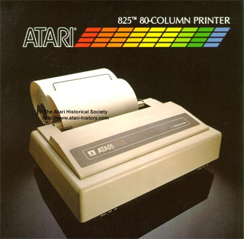

The Atari 825 Printer
Atari introduced with its Atari 400 and 800 series computers its first 80 Column printer. The Atari 825 which actually a repackaged Centronics 737 printer. Earlier models had limited capabilities, the later 825 models with the extended basic character set had the capability of producing the Atari ATASCII graphics character set. The Atari 825 required the use of the Atari 850 interface module to allow it to communicate with the Atari 400 and 800 computer because it had a Centronic parallel interface on it instead of the Atari SIO interface which the Atari 820 and Atari 822 printers had built in.

Atari had a large back order for Atari 825 printers from its dealer network
which it was unable to fill because according to warehouse records, there
were no Atari 825's available to ship. In late 1984 when Atari
was sold from Warner Communications to Tramiel Technologies a company was
brought in to liquidate Atari's assests to generate capital.
A warehouse was inventoried and it was discovered to be completely filled
from floor to ceiling with palettes upon palettes of brand new never opened
Atari 825 printers.
Click
Here to
View
825 Specs
(111K)
{kind=link}
{kind=link}